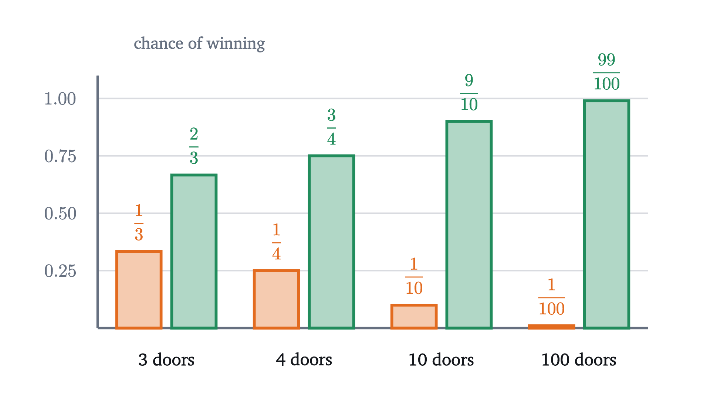

Monty Hall problem: why switching wins two times in three
Three doors, one car, and a host who opens a goat door. Switching wins 2/3 of the time. Three solutions, and why the answer depends on what the host knows.
AssumesWhat probability means: counting equally likely outcomesBayes' rule: why a positive test is usually a false alarm
You are on a game show, facing three closed doors. Behind one is a car, and behind the other two are goats. You pick a door, say door 1. The host, who knows where the car is, opens one of the other two doors, say door 3, and shows you a goat. Then he makes an offer: you may stay with door 1 or switch to door 2. Does it matter what you do?
Pause and try
Decide before reading on: is the car more likely behind door 1, more likely behind door 2, or equally likely behind either? Write down a probability for each.
Show answerHide answer
Most people say the two closed doors are equally likely, $\frac12$ each, so the offer is worthless. Under the rules stated below, door 1 has probability $\frac13$ and door 2 has probability $\frac23$. Switching doubles your chance of winning.
The puzzle is named after Monty Hall, the host of the American show Let’s Make a Deal. It became notorious in 1990, when the columnist Marilyn vos Savant gave the answer $\frac23$ in Parade magazine and received thousands of letters, many from readers with doctorates, telling her she was wrong. She was right. The simulation above plays the game 1000 times and agrees with her: staying won 334 games and switching won 666. By the law of large numbers, shares over that many games sit close to the probabilities.
An answer this counterintuitive deserves more than one argument. We will solve the problem three ways, and then change one detail of the story and watch the answer change to $\frac12$, which shows what the correct argument depends on.
The rules of the game
The answer depends on how the host behaves, so the first job is to say exactly what we assume. Informal tellings usually leave this out, and that omission is responsible for much of the arguing.
Rule 3 is the heart of it: the host is not exploring. He cannot open your door and he cannot reveal the car. Rule 4 only matters for one of our three arguments, and we will see what happens when it is dropped.
First solution: list the cases
Suppose you pick door 1. (The doors are only labels, so nothing is lost.) By rule 1 there are three equally likely cases for where the car is, and in each of them we can follow what the host must do and how each strategy fares.
Staying wins in one case out of three and switching wins in two. The table also shows why, in a form worth saying aloud. If your first pick was the car, switching loses. If your first pick was a goat, the host is forced to open the only other goat door, so the door he leaves closed is the car, and switching wins. Your first pick is a goat with probability $\frac23$.
The $\frac12$ answer comes from counting closed doors: two remain, so each gets half. But “there are two possibilities” does not make them equally likely. As the lesson on sample spaces stressed, dividing by the number of outcomes is only valid when the outcomes are equally likely, and here the two doors have very different histories. Door 1 is closed because you chose it. Door 2 is closed because the host, who knows where the car is, passed over it.
Second solution: Bayes’ theorem
A careful reader may object to the table. It shows that the strategy of switching wins two games in three overall. But at the moment of decision you know more: you saw the host open door 3 in particular. The first row of the table mixes games where he opens door 2 with games where he opens door 3. Is the chance still $\frac23$ given exactly what you saw?
This is a question about conditional probability, and the tool for it is Bayes’ theorem from the lesson on conditional probability. To restate what we need: $P(A \mid B) = P(A \cap B)/P(B)$ is the probability of $A$ given that $B$ occurred. If $B_1, \dots, B_n$ are events of positive probability, exactly one of which occurs, and $A$ is an event with $P(A) > 0$, then
Here the hypotheses are $C_1$, $C_2$, $C_3$: the car is behind door 1, 2 or 3. You picked door 1. The evidence is the event $E$: the host opens door 3.
Pause and try
Using the four rules, find $P(E \mid C_1)$, $P(E \mid C_2)$ and $P(E \mid C_3)$: the probability that the host opens door 3 in each of the three cases. Then apply Bayes’ theorem to get $P(C_2 \mid E)$.
Show answerHide answer
If the car is behind door 1, both other doors hide goats and by rule 4 the host opens door 3 with probability $\frac12$. If the car is behind door 2, door 3 is the only door he may open: probability 1. If the car is behind door 3 he cannot open it: probability 0. So
The picture shows where the intuition goes wrong. Before the host acts, each door has $\frac13$. The host then opens door 3 in half of the games where the car is behind door 1, and in all of the games where it is behind door 2. Seeing door 3 open is therefore twice as likely when the car is behind door 2 as when it is behind door 1, and the evidence favors door 2 by two to one.
There is a second thing to read off. $P(C_1 \mid E) = \frac13$, the same as $P(C_1)$ before the host did anything. Under rule 4 the host opens door 3 with probability $\frac12$ whether or not the car is behind door 1, so what he does is independent of whether your first pick was right, and it cannot change your door’s probability. The $\frac13$ that belonged to door 3 does not get shared out. All of it goes to door 2.
Third solution: a hundred doors
The first two arguments are correct, and many people who follow every line still feel that the two doors ought to be even. For them there is a third argument, which changes the numbers until the intuition gives way.
Play the same game with 100 doors: one car, 99 goats. You pick a door. The host, who knows where the car is, opens 98 of the other 99 doors, all goats, leaving your door and one other closed.
Nobody watching the host walk down the line, opening door after door and conspicuously skipping one, believes the skipped door is a coin flip against their own. Your first pick was a 1 in 100 shot and still is. In the other 99 games out of 100 the car is among the doors you did not pick, and the host, who is not allowed to reveal it, has no choice but to leave it closed.
Pause and try
With $n$ doors, of which the host opens $n - 2$, what is the probability that switching wins? Check your formula at $n = 3$ and $n = 100$.
Show answerHide answer
Switching wins exactly when the first pick is wrong, which has probability $\frac{n-1}{n}$: that is $\frac23$ for three doors and $\frac{99}{100}$ for a hundred.
The three-door game is the same game with the contrast turned down. The general statement uses only rules 1 to 3.
Notice that this proof says nothing about which goat door the host opens when he has a choice. Rule 4 was not used. The theorem is about how often each strategy wins over many games. The Bayes calculation answered a finer question, the probability given the particular door you saw opened, and that one does depend on rule 4, as the worked examples will show.

What the host’s knowledge does
Every argument so far leaned on rule 3. To see how much weight it carries, change it. Suppose the host does not know where the car is. He opens one of the two doors you did not pick by flipping a coin, and it happens to reveal a goat. From where you stand the scene is identical: your door, one open door with a goat, one other closed door. Should you still switch?
Pause and try
With an ignorant host there are six equally likely cases: three places for the car, times two doors the host might open. You picked door 1. List the six cases, cross out those in which the host reveals the car, and find the probability that switching wins among the rest.
Show answerHide answer
Car at 1, opens 2: goat. Car at 1, opens 3: goat. Car at 2, opens 2: car revealed. Car at 2, opens 3: goat. Car at 3, opens 2: goat. Car at 3, opens 3: car revealed. Four cases survive and they are equally likely. In two of them the car is behind your door and in two it is behind the other closed door. Switching wins with probability $\frac24 = \frac12$.
Bayes’ theorem gives the same answer and shows which number changed. With $E$ now meaning “the host opens door 3 and it shows a goat”:
so $P(C_2 \mid E) = \frac{\frac12 \cdot \frac13}{\frac12 \cdot \frac13 + \frac12 \cdot \frac13} = \frac12$. Compare with the knowing host, for whom $P(E \mid C_2)$ was 1. A host who knows the car is behind door 2 opens door 3 every time. A host who is guessing opens door 3 only half the time, and the other half he ruins the game by revealing the car. For the ignorant host, a goat behind door 3 is exactly as expected whether the car is behind door 1 or door 2, so it favors neither.
What you see is the same in both stories. What it tells you depends on the process that produced it. The simulation below plays the same 3000 deals with both hosts.
Worked examples
Common mistakes
Stepping back
The arithmetic here is three fractions. The difficulty is that the host’s action feels like plain information, “door 3 has a goat”, when it is the output of a procedure. A knowing host is constrained by where the car is, and his choice therefore leaks information about it. Under the standard rules the leak says nothing about your door and everything about the other one.
The reusable habit is the one Bayes’ theorem enforces. When you learn something, ask how probable it was that you would learn exactly that under each hypothesis. Hypotheses that made the observation more probable gain, in proportion. Counting the possibilities that remain is not a substitute.
Check yourself
In the standard game you pick door 1 and the host opens door 2, showing a goat. What is the probability that the car is behind door 3?
Problems
The first three repeat the lesson’s arguments with new numbers. The next three change the rules. The last two connect the problem to other settings.
Problem 1
There are 5 doors with one car. You pick a door, and the host, who knows where the car is, opens 3 goat doors among the other four. What is the probability of winning if you stay, and if you switch to the other closed door?
Show solutionHide solution
Your first pick is right with probability $\frac15$, and the host’s actions do not change that, so staying wins with probability $\frac15$. If the first pick is wrong, which has probability $\frac45$, the car is among the other four doors, and the host must leave it closed while opening the other three. So switching wins with probability $\frac45$.
Problem 2
Imagine 300 standard games in which you pick door 1 every time, and suppose the car is behind each door in exactly 100 of them and the host’s coin splits evenly. In how many games does the host open door 3? In how many of those is the car behind door 2?
Show solutionHide solution
Car behind door 1 (100 games): the host opens door 2 in 50 and door 3 in 50. Car behind door 2 (100 games): he opens door 3 in all 100. Car behind door 3 (100 games): he opens door 2 in all 100. So he opens door 3 in $50 + 100 = 150$ games, and in 100 of those the car is behind door 2. That is $\frac{100}{150} = \frac23$, the Bayes calculation in whole numbers.
Problem 3
A friend says: “Once door 3 is open, the situation is symmetric between doors 1 and 2. Each is a closed door that might hide the car. So by symmetry they have equal probability.” Identify precisely what breaks the symmetry.
Show solutionHide solution
Symmetry would require that the two doors were treated alike by the process that led here, and they were not. Door 1 was protected: by rule 3 the host could not open it whatever was behind it, so its staying closed carries no information. Door 2 was exposed: the host was free to open it and would have done so in half the games where the car is behind door 1, but was forbidden to in every game where the car is behind door 2. Its staying closed is evidence. In numbers, “door 2 stays closed” has probability $\frac12$ if the car is behind door 1 and probability 1 if it is behind door 2.
Problem 4
There are 4 doors with one car. You pick a door, and the host, who knows where the car is, opens one goat door among the other three, choosing at random among the goat doors available to him. You then switch to one of the two other closed doors, chosen at random. What is your probability of winning? Is switching still better than staying?
Show solutionHide solution
Staying wins with probability $\frac14$. If the first pick is wrong, which has probability $\frac34$, the car is behind one of the two other closed doors, and a random choice between them finds it with probability $\frac12$. If the first pick is right, switching loses. So switching wins with probability $\frac34 \cdot \frac12 = \frac38$, which is more than $\frac14$. Check: by symmetry the two other closed doors have equal probability, and $\frac14 + \frac38 + \frac38 = 1$.
Problem 5
An ignorant host plays the three-door game: he opens one of the two doors you did not pick at random. If he reveals the car, the game is void and you win nothing. If he reveals a goat, you switch. (a) What is the probability that the game is void? (b) What is the probability that you win the car? (c) Would always staying do better?
Show solutionHide solution
Use the six equally likely cases from the lesson. (a) The car is revealed in 2 of 6 cases: $\frac13$. (b) You win by switching in the cases where the car is behind the other closed door and a goat was shown: car at 2 with door 3 opened, and car at 3 with door 2 opened. That is 2 of 6: $\frac13$. (c) Staying wins when the car is behind door 1 and the game is not void, which is also 2 of 6. The two strategies are equally good, consistent with the conditional probability $\frac12$: each wins half of the $\frac23$ of games that are not void.
Problem 6
A host follows rules 1 to 3, and when he has a choice between doors 2 and 3 he opens door 3 with probability $q$, where $0 \le q \le 1$. You pick door 1. (a) Find $P(C_2 \mid \text{he opens door 3})$ and $P(C_3 \mid \text{he opens door 2})$ in terms of $q$. (b) Show that both are at least $\frac12$, so switching is never worse than staying whatever you see. (c) Verify that the overall probability that switching wins is $\frac23$ for every $q$.
Show solutionHide solution
(a) For “opens door 3”: the probabilities under $C_1, C_2, C_3$ are $q$, 1, 0, so $P(C_2 \mid \text{opens 3}) = \frac{\frac13}{\frac13 q + \frac13} = \frac{1}{1 + q}$. For “opens door 2”: the probabilities are $1 - q$, 0, 1, so $P(C_3 \mid \text{opens 2}) = \frac{1}{(1 - q) + 1} = \frac{1}{2 - q}$.
(b) Since $0 \le q \le 1$, both denominators $1 + q$ and $2 - q$ lie between 1 and 2, so both probabilities lie between $\frac12$ and 1.
(c) $P(\text{opens 3}) = \frac{1 + q}{3}$ and $P(\text{opens 2}) = \frac{2 - q}{3}$. So the probability that switching wins is
The case $q = \frac12$ is rule 4, and $q = 0$ is the lazy host of the worked example.
Problem 7
In the 100-door game, suppose the host does not know where the car is. He opens 98 of the other 99 doors at random, and all 98 happen to show goats. What is the probability that the car is behind your door?
Show solutionHide solution
Let $E$ be “the 98 opened doors all show goats”. If the car is behind your door, every other door hides a goat and $E$ is certain: $P(E \mid \text{yours}) = 1$. If the car is behind a particular other door $j$, then $E$ happens only if door $j$ is the one the host leaves closed. He leaves each of the 99 doors closed with equal probability, so $P(E \mid \text{car at } j) = \frac{1}{99}$. By Bayes’ theorem,
With an ignorant host the two closed doors are equally likely even with 100 doors. Surviving 98 random openings is strong evidence, and it is equally strong for your door and for the other one, since each had to be lucky in the same way.
Problem 8
(Bertrand’s boxes.) Three boxes each hold two coins: one has two gold coins, one has two silver coins, and one has one of each. You choose a box at random and draw one of its coins at random. It is gold. What is the probability that the other coin in the same box is also gold? Explain the connection to the Monty Hall problem.
Show solutionHide solution
The tempting answer is $\frac12$: the box is either gold-gold or gold-silver. But those two boxes are not equally likely given what you saw. There are three gold coins, each equally likely to be the one you drew: two of them are in the gold-gold box and one is in the mixed box. So the other coin is gold with probability $\frac23$. By Bayes’ theorem: $P(\text{gold drawn} \mid GG) = 1$, $P(\text{gold drawn} \mid GS) = \frac12$, $P(\text{gold drawn} \mid SS) = 0$, so $P(GG \mid \text{gold}) = \frac{1 \cdot \frac13}{1 \cdot \frac13 + \frac12 \cdot \frac13} = \frac23$. The numbers $1, \frac12, 0$ are the same three numbers as in the Monty Hall calculation, and the error is the same: two possibilities remain, and one of them was twice as likely to produce the observation.